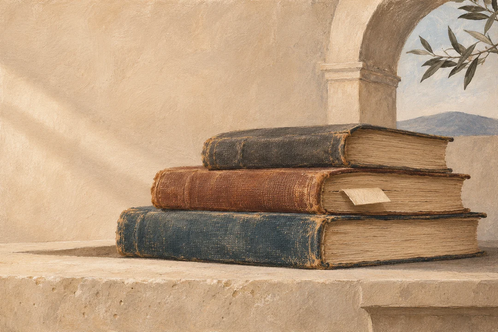

Deney tamamlandı · video yayında
Machiavelli / Prens deneyi
Üç düşünce yedi takvim günü boyunca gerçek karar anlarında etik biçimde sınandı; sonuç olumlu fakat kısmi.
Fikirleri gerçek hayatta test ediyorum.
FİKİR
Bir düşünceyi anlamak için önce onun ne iddia ettiğini araştırıyorum.
Kaynağı oku. İddiayı anla. Soruyu belirle.
DENEY
Fikirleri yalnızca okumuyor, gerçek koşullarda test ediyorum.
Uygula. Zorlandığın anları kaydet. Değişimi izle.
SONUÇ
Başarıları, başarısızlıkları ve sınırları olduğu gibi paylaşıyorum.
Sonucu, kanıtları ve eksikleri birlikte değerlendir.
KEŞFET
Deneyleri, kaynakları ve dürüst kayıtları keşfet.
Deney tamamlandı · video yayında
Üç düşünce yedi takvim günü boyunca gerçek karar anlarında etik biçimde sınandı; sonuç olumlu fakat kısmi.

Deney devam ediyor
60 gün boyunca kendi davranışlarım üzerindeki kontrolü gözlemliyorum. Kararlarımı ve zorlandığım anları kayıtlarla değerlendireceğim.

Kitap tamamlandı · 7 günlük deney devam ediyor
Kitabı tamamladım. Üç yöntemi seçtim. Şimdi yedi gün boyunca gerçek hayatımda test ediyorum.

Kitaplardan seçilmiş düşünceleri kaynakları ve yorumlarıyla oku. Bir yazar, kitap veya konuyla başla.
Arşivi keşfet